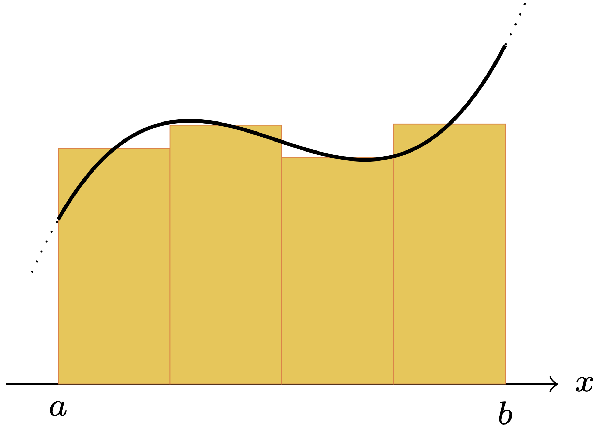

2025-3S 計算数理演習（東京大学理学部・教養学部） [齊藤宣一] [top] [0] [1] [2] [3] [4] [5] [6] [7] [8] [UTOL]
有界な閉区間 $[a,b]$ 上の実数値連続関数 $f(x)$ について，定積分 \begin{equation} \tag{4.1} Q(f)=\int_a^b f(x)~dx \end{equation} の値を計算する問題を考える．"Q"は，quadrature（数値解析分野では数値積分を意味する）の頭文字をとった．
$[a,b]$ 内に相異なる $m+1$ 個の点（積分点） $a=x_0 < x_1 < \cdots < x_{m-1} < x_{m}=b$ を配置して ，小区間 $I_i=[x_{i},x_{i+1}]$ $(i=0,\ldots,m-1)$ を定義する． そして，$Q(f)$を，各小区間 $I_i$ 上での積分に分割しておく： \[ Q(f)=\sum_{i=0}^{m-1}\int_{{x}_{i}}^{{x}_{i+1}}f(x)~ dx \] また， $x_{i+\frac12}=(x_{i}+x_{i+1})/2$， $h_i=x_{i+1}-x_{i}$， $h=\max_{0\le i\le m-1}h_i$ と定義しておく．
複合中点則 (composit midpoint rule, composit rectangle rule) 各 $I_i$ 上で，$f(x)$ を中点での値 $f(x_{i+\frac12})$ で近似する： \[ M_h(f)=\sum_{i=0}^{m-1} f(x_{i+\frac12})h_i. \] 複合台形則 (composit trapezoidal rule) 各 $I_i$ 上で，$f(x)$ を2点 $(x_{i},f(x_{i}))$ と $(x_{i+1},f(x_{i+1}))$ を通る一次関数で近似する： \[ T_h(f)=\sum_{i=0}^{m-1}\frac{f({x}_{i})+f({x}_{i+1})}{2}{h_i}. \] 複合Simpson則 (composit Simpson rule) 各 $I_i$ 上で，$f(x)$ を3点 $(x_{i},f(x_{i}))$，$(x_{i+\frac12},f(x_{i+\frac12}))$ と $(x_{i+1},f(x_{i+1}))$ を通る二次関数で近似する： \[ S_h(f)=\sum_{i=0}^{m-1}\frac{f(x_{i})+4f(x_{i+\frac12})+f(x_{i+1})}{6} h_i. \]
|  |
|---|
次は，複合則を計算するプログラムである．先に，この節で頻繁に利用するモジュールをインポートしておく．
In [1]: import numpy as np import matplotlib.pyplot as plt
In [2]:
#複合NC則（成分計算版）
#複合中点則
def mid1(f, a, b, x, m):
xmid=0.5*(x[1:]+x[:-1])
h=x[1:]-x[:-1]
val = 0
for i in range(0, m):
val += f(xmid[i])*h[i]
return np.amax(h), val
#複合台形則
def trape1(f, a, b, x, m):
h=x[1:]-x[:-1]
val = 0.0
for i in range(0, m):
val += (f(x[i])+f(x[i+1]))*h[i]
return np.amax(h), 0.5*val
#複合Simpson則
def simp1(f, a, b, x, m):
xmid=0.5*(x[1:]+x[:-1])
h=x[1:]-x[:-1]
val = 0.0
for i in range(0, m):
val += (f(x[i]) + 4.0*f(xmid[i]) + f(x[i+1]))*h[i]
return np.amax(h), val/6.0
前回も説明したが，もう一度繰り返して説明する．一般に，配列 $\mbox{u}=\boldsymbol{u}=(u_0,u_1,\ldots,u_{n})$ に対して， $\mbox{u[-1]}$ で最後（最後尾）の成分 $u_{n}$ が参照される． $\mbox{u[-2]}$ はその一つ手前 $u_{n-1}$ である．さらに， $\mbox{u[:-1]}=(u_0,\ldots,u_{n-1})$ であり， $\mbox{u[1:]}=(u_1,\ldots,u_{n})$ を意味する．したがって， \begin{align*} \frac{1}{2} (\mbox{u[1:]}+\mbox{u[:-1]}) &= \left( \frac{u_1+u_0}{2},\ldots,\frac{u_{n}+u_{n-1}}{2}\right),\\ \mbox{u[1:]}-\mbox{u[:-1]} &= \left( u_1-u_0,\ldots,u_{n}-u_{n-1}\right) \end{align*} となる．
さらに，amax(u)で，$\boldsymbol{u}$ の最大の成分が， amin(u)で，$\boldsymbol{u}$ の最小の成分が取得できる．
In [3]: u=np.array([1,2,3,4,5]) print(u[-1]) print(u[-2]) print(u[0]) print(u[:-1]) print(u[1:]) print(0.5*(u[1:]+u[:-1])) print(u[1:]-u[:-1]) print(np.amax(u)) print(np.amin(u)) Out [3]: 5 4 1 [1 2 3 4] [2 3 4 5] [1.5 2.5 3.5 4.5] [1 1 1 1] 5 1
例題を設定しよう．
関数 $f(x)=3x^2e^{x^3}=3x^2\exp(x^3)$ に対して， \begin{equation} \tag{4.2} Q(f) = \int_0^1 3x^2e^{x^3}~dx = [e^{x^3}]_0^1=e-1=1.7182818284590\cdots \end{equation} を計算する．$\blacksquare$
(4.2)の積分を先ほどのIn[1]を使って計算しよう．$a=0,b=1$ として，積分点を等間隔 $x_j=a+j(b-a)/m$ $(j=0,\ldots,m)$ に選ぶ．このとき，$h=h_j=(b-a)/m$ である．
In [4]:
#被積分関数
a=0
b=1
def integrand(x):
return 3*(x**2)*np.exp(x**3)
#分割
m=10
x=np.linspace(a,b,m+1)
#数値積分
hsize = np.empty(3)
val = np.empty(3)
hsize[0], val[0] = mid1(integrand, a, b, x, m)
hsize[1], val[1] = trape1(integrand, a, b, x, m)
hsize[2], val[2] = simp1(integrand, a, b, x, m)
#厳密解
exact = np.exp(1.0)-1.0
#結果の出力
err = np.empty(3)
for i in range(3):
err[i] = np.abs(val[i]-exact)
print(f'{hsize[i]:.3e}, {val[i]:.16f}, {err[i]:.3e}')
Out [4]:
1.000e-01, 1.7014827690091869, 1.680e-02
1.000e-01, 1.7520426417880843, 3.376e-02
1.000e-01, 1.7183360599354864, 5.423e-05
はじめから等間隔積分点のみを使うのであれば，例えば，複合台形則は，次のように書いても良い．しかし，この類の簡略化については，今後，追求しない．
In [*]:
def trap0(f, a, b, m):
h = (b-a)/m
val = 0
for i in range(1, m):
x = a + i*h
val += f(x)
return h*(0.5*f(a) + val + 0.5*f(b))
さて，上の mid1， trap1， simp1では，for文を用いて配列の成分計算をしているが， これをベクトルの演算のみで書くことも可能である．例えば， 積分点 $\boldsymbol{x}=\left(x_0,x_1,\ldots,x_{m}\right)\in\mathbb{R}^{m+1}$ に対して， 各小区間の長さからなるベクトル $\boldsymbol{h}=\left(x_1-x_0,\ldots,x_{m}-x_{m-1}\right)\in\mathbb{R}^m$ と 各小区間の中点から成るベクトル $\boldsymbol{x}_{\textup{mid}} =\left(x_{\frac12},\ldots,x_{m-\frac12}\right)\in\mathbb{R}^m$ を用意して， \[ M_h(f)= (f(x_{\frac12}),\ldots,f(x_{m-\frac12})) \cdot\boldsymbol{h}\qquad \mbox{ (ベクトルの内積)} \] とすれば良い． なお，計算しなくても，$\boldsymbol{h}=(h,\ldots,h)$であることはわかっているが，将来，積分点を非等間隔に拡張する可能性を考慮して，このようにしておく． $T_h(f)$ と $S_h(f)$ の計算も同様である．
このような考えで複合則を計算する関数mid2， trap2， simp2は，次の通りである．
In [5]: #複合NC則（ベクトル計算版） #複合中点則 def mid2(f, a, b, x): xmid=0.5*(x[1:]+x[:-1]) h=x[1:]-x[:-1] return np.amax(h), np.dot(f(xmid) , h) #複合台形則 def trape2(f, a, b, x): h=x[1:]-x[:-1] return np.amax(h), 0.5*np.dot(f(x[:-1]) + f(x[1:]) , h) #複合Simpson則 def simp2(f, a, b, x): xmid=0.5*(x[1:]+x[:-1]) h=x[1:]-x[:-1] return np.amax(h), np.dot(f(x[:-1]) + 4.0*f(xmid) + f(x[1:]) , h) / 6.0
実行してみると，次のようになる．当然であるが，Out[4]と結果は同じになる．（本当に当然だろうか？）
In [6]:
#複合NC則の実行
#被積分関数
a=0
b=1
def integrand(x):
return 3*(x**2)*np.exp(x**3)
#分割
m=10
x=np.linspace(a,b,m+1)
#数値積分
hsize = np.empty(3)
val = np.empty(3)
hsize[0], val[0] = mid2(integrand, a, b, x)
hsize[1], val[1] = trape2(integrand, a, b, x)
hsize[2], val[2] = simp2(integrand, a, b, x)
#厳密解
exact = np.exp(1.0)-1.0
err = np.empty(3)
for i in range(3):
err[i] = np.abs(val[i]-exact)
print(f'{hsize[i]:.3e}, {val[i]:.16f}, {err[i]:.3e}')
Out [6]:
1.000e-01, 1.7014827690091869, 1.680e-02
1.000e-01, 1.7520426417880843, 3.376e-02
1.000e-01, 1.7183360599354864, 5.423e-05
数学的な考察に進む前に，プログラミングにおける技術的な注意をしておく． 上では，同じ積分公式を計算する関数として， mid1， trap1， simp1と mid2， trap2， simp2を紹介した． どちらを使うべきであろうか？
計算効率の観点から考えてみる．そのために， timeモジュールのperf_counterを利用する． これは，現在時刻を取得する関数である．対象とする計算の前後で，perf_counter によって時刻を取得して，その差を取ることで，計算にかかったおおよその時間を知ることができる．もちろん，計算以外の処理の時間も含まれるので，厳密に計算のみにかかった時間が わかるわけではないが，計算効率を知る上では便利である．（なお，timeという関数もあるが，perf_counter の方が正確らしい． また，timeitモジュールに，Timerという関数があり，これを使っても良い）
In [7]:
import time
#被積分関数
a=0
b=1
def integrand(x):
return 3*(x**2)*np.exp(x**3)
#分割
m=100
x=np.linspace(a,b,m+1)
#数値積分
print(f"m = {m:d}")
print("component-wise")
start = time.perf_counter()
h1, val1=trape1(integrand, a, b, x, m)
time1=time.perf_counter() - start
print("value=",val1)
print("time=",time1)
print("vector")
start = time.perf_counter()
h2, val2=trape2(integrand, a, b, x)
time2=time.perf_counter() - start
print("value=",val2)
print("time=",time2)
print("rate=",time1/time2)
Out [7]:
m = 100
component-wise
value= 1.7186215916047793
time= 0.0011202099999536586
vector
value= 1.718621591604779
time= 0.0003993550000132018
rate= 2.805048139917184
$m$ の値を色々変えて実行してみれば，どちらが効率的かは，一目瞭然である．
ついでに，もう一つ例を挙げよう．行列 $A=(A_{ij})\in \mathbb{R}^{n\times n}$， $B=(B_{ij})\in \mathbb{R}^{n\times n}$ の積 $C=(C_{ij})\in \mathbb{R}^{n\times n}$ は， \[ C_{ij}=\sum_{k=1}^nA_{ik}B_{kj} \] で定義されるのであった．それならば，$A$ と $B$ の積が計算したいときに， この定義通りに計算するのが良いであろうか？ それとも，dotや@ を使うべきであろうか？
In [8]:
import time
from numpy import linalg as la
n=100
A=np.random.rand(n,n)
B=np.random.rand(n,n)
C=np.empty((n,n))
print("成分計算1")
start = time.perf_counter()
for i in range(n):
for j in range(n):
C[i,j]=0.0
for k in range(n):
C[i,j] += A[i,k]*B[k,j]
print(time.perf_counter() - start)
print("成分計算2")
start = time.perf_counter()
for i in range(n):
for j in range(n):
tmp=0.0
for k in range(n):
tmp += A[i,k]*B[k,j]
C[i,j]=tmp
print(time.perf_counter() - start)
print("A@B")
start = time.perf_counter()
D=A@B
print(time.perf_counter() - start)
print("dot(A,B)")
start = time.perf_counter()
E=np.dot(A,B)
print(time.perf_counter() - start)
print("check")
print(la.norm(C-D,ord=2))
print(la.norm(C-E,ord=2))
Out [8]:
成分計算1
1.8513105690000202
成分計算2
2.0773600979999856
A@B
0.0045662339999807955
dot(A,B)
0.0013333079999711117
check
8.82123163285002e-14
8.82123163285002e-14
以上のように，pythonでは，for文を使うよりも， ベクトル化して計算することを勧める．
積分公式の誤差についての理論的な結果を復習しておこう． $[a,b]$ 上の連続関数 $f(x)$ に対して， \[ \|f\|_\infty=\max_{x\in [a,b]}|f(x)| \] と書く．次は，[齊藤2012]の定理7.4.8である．
定理. $f$ が $[a,b]$ 上で $C^2$ 級ならば， \begin{eqnarray*} |Q(f)-M_h(f)|&\le& \frac{b-a}{24}h^2\|f''\|_\infty,\\ |Q(f)-T_h(f)|&\le& \frac{b-a}{12}h^2\|f''\|_\infty \end{eqnarray*} が成り立つ．また，$f$ が $[a,b]$ 上で $C^4$ 級ならば， \[ |Q(f)-S_h(f)|\le \frac{b-a}{2880}h^4\|f^{(4)}\|_\infty \] が成り立つ．$\blacksquare$
複合中点則の誤差を調べるために， \[ E_h(f)= Q(f)-M_h(f) \] を調べる．この量が，$h\to 0$ の際に，$h^2$ に比例して減衰する事実を実験的に確かめたい． そのために，とりあえず，$g(h)=Ch^r$ という関係式を考える（$C$ と $r$ は，$h$ には依存しない正定数）．このとき，$h_0 > h_1 > 0$ に対して， \[ r= \frac{\log g(h_0)-\log g(h_1)}{\log h_0- \log h_1} \] となることに注意する．さて，正の整数 $m_{\min} < m_{\max}$ と $\Delta m$ を選び，$m_k=m_{\min}+k\Delta m$ $(k=0,1,\ldots,k_{\max})$ と定める． ただし，$k_{\max}$ は，$m_{k_{\max}}\le m_{\max}$ を満たす最小の整数である． そして，$h_k=(b-a)/m_{k}$ に対して， \[ r_k=\frac{\log |E_{h_{k}}(f)|-\log |E_{h_{k+1}}(f)|}{\log h_{k}- \log h_{k+1}}\qquad (k=0,1,\ldots) \] と定義して，この量を観察してみよう．
In [9]:
#被積分関数
a=0
b=1
def integrand(x):
return 3*(x**2)*np.exp(x**3)
#厳密解
exact = np.exp(1.0)-1.0
#実験の範囲
mmin=10
mmax=200
dm=20
error=np.array([])
division=np.array([])
for m in range(mmin, mmax+1,dm):
x=np.linspace(a,b,m+1)
hsize, val = mid2(integrand,a,b,x)
tmp = np.abs(exact - val)
error=np.append(error,tmp)
division=np.append(division,hsize)
#収束率の計算
rate=(np.log(error[1:]) - np.log(error[:-1])) / (np.log(division[1:]) - np.log(division[:-1]))
for i in range(0,division.shape[0]-1):
print(f"{division[i+1]:f}, {rate[i]:.3f}")
#結果の描画（両対数目盛）
plt.plot(division, error, 'bo-')
plt.xscale('log')
plt.yscale('log')
plt.legend(['midpoint rule'])
plt.xlabel('h')
plt.ylabel('error')
plt.grid('on')
plt.gca().set_aspect('equal', adjustable='box')
plt.show()
Out [9]:
0.033333, 1.991
0.020000, 1.998
0.014286, 1.999
0.011111, 2.000
0.009091, 2.000
0.007692, 2.000
0.006667, 2.000
0.005882, 2.000
0.005263, 2.000
この結果より，$k\to \infty$ の際に，$r_k\to 2$ が観察でき，少なくともこの例については，十分小さな $h$ に対しては，適当な正定数 $C$ が存在して，$|E_h(f)|=Ch^2$ となることがわかる．実際，図4.2は，$(h,|E_h(f)|)$ を両対数目盛りを用いてプロットしたものである．図4.2より， $\log |E_h(f)| = 2 (\log h) +C$ が観察できるので，これからも，$|E_h(f)|=Ch^2$ が結論できる．
複合中点則， 複合台形則， 複合Simpson則は，低次のNetwon-Cotes公式である．一般のNetwon-Cotes公式を説明しよう．
$[a,b]$ 上の関数 $f(x)$ を考える． $a \le x_0 < x_1 < \cdots < x_{n} \le b$ とする．これを， 補間点（標本点）と呼ぶ．この補間点に関する 関数 $f(x)$ の $n$ 次のLagrange補間多項式 $p_n(x)$ とは， \[ p_n(x_i)=f(x_i)\qquad (0\le i\le n) \] を満たす $n$ 次多項式である．このような $p_n(x)$ は，一意的に存在する．実際，一意性は，代数学の基本定理の応用である．一方で，$p_n(x)$ は，具体的に，次のように与えられる： \[ p_n(x)=\sum_{i=0}^n f(x_i)L_i(x), \qquad L_i(x)=\prod_{k=0,k\ne i}^n\frac{x-x_k}{x_i-x_k}. \] $L_i(x_j)=0$ $(i\ne j)$，$L_i(x_i)=1$ であることに注意せよ．
$y = x + \sin 3x$ を $0\le x\le 4$ で考える．等間隔補間点 \[ x_j=jh=\frac{4j}{n}\qquad (j=0,1,\ldots,n) \] を用いて $n$ 次のLagrange補間多項式で近似する．結果は，図4.3の通りで，$n$ を大きくすると，上手く近似ができるようだ．$\blacksquare$
$\displaystyle{y=\frac{1}{1+x^2}}$ を $-5 \le x \le 5$ で考える．等間隔補間点 \[ x_j=-5+jh=-5+\frac{10j}{n}\qquad (j=0,1,\ldots,n) \] を用いて $n$ 次のLagrange補間多項式で近似する．結果は，図4.4の通りで，今度は，$n$ を大きくすると，近似としては破綻してしまう．$\blacksquare$
引き続き，$\displaystyle{y=\frac{1}{1+x^2}}$ を $-5 \le x \le 5$ で考える．今度は，等間隔でなく， \[ { x_j=5\cos\left(\frac{(j+\frac12)\pi}{n+1}\right)\qquad (j=0,1,\ldots,n)} \] と選ぶ．結果は，図4.5の通りで，$n$ を大きくすると，良い近似が得られる．実は，この補間点の選び方は，Chebyshev多項式の零点に対応している．すなわち，補間点を，直交多項式の零点にとると，$n$ を大きくしても，良い近似が得られるのである．$\blacksquare$
次の数値積分公式をNewton-Cotes積分公式と言う．
開型の $n=0$ の場合を，中点則という．閉型の $n=1$ のときを，台形則 ，閉型の $n=2$ のときをSimpson則という．
ところが，Rungeの例で見た通り， 高次のLagrange補間多項式は，大変良くないことがあるので，推奨できない． 回避策は次の2つである：
参考のため，図4.4を描いたプログラムを紹介しておく．
In [10]:
from scipy.interpolate import lagrange
#補間関数
#f_org = lambda x: x+np.sin(3.0*x)
f_org = lambda x: 1.0 / (1.0 + x**2.0)
#Lagrange補間を求める
a=-5.0
b=5.0
n=12
x =np.linspace(a,b,n+1)
y = f_org(x)
f_lag = lagrange(x, y) #scipyのLagrange補間の関数を使う
#結果の表示
print(type(f_lag))
xnew =np.linspace(a,b,201)
plt.plot(x, f_org(x), 'o',color='#ff7f00')
plt.plot(xnew, f_org(xnew), '-',color='#ff7f00')
plt.plot(xnew, f_lag(xnew), 'b-')
plt.legend(['f(x_i)','f(x)','pn(x)'], loc=(0.1, 0.8))
plt.grid('on')
plt.gca().set_aspect('equal', adjustable='box')
plt.show()
有界な開区間 $(a,b)$ 上の連続関数で $w(x)>0$，$\int_a^bw(x)~dx<\infty$ を満たすものを取り（積分は広義積分を含む）， \begin{equation} \tag{4.3} (f,g)=(f,g)_w=\int_a^b f(x)g(x)w(x)\ dx \end{equation} と定義する．$w$ を重み関数，あるいは，密度関数という．
定義. 多項式の列 $\{\phi_n\}_{n\ge 0}$ が（重み関数 $w$ に対する） 直交多項式系であるとは，各 $\phi_n$ が $n$ 次の多項式であり， $(\phi_n,\phi_m)= 0$ $(n\ne m)$ かつ $(\phi_n,\phi_n)>0$ が成り立つことである． ただし，$\phi_0$ は非零の定数関数とする．$\blacksquare$
任意の重み関数 $w $に対して，直交多項式系は確かに存在する（[齊藤2012]の154-155頁）．$\{\phi_n\}_{n\ge 0}$ と $\{\hat{\phi}_n\}_{n\ge 0}$ を直交多項式系とする． このとき，各 $\phi_n,\hat{\phi}_n$ は， 定数倍の不定さを除けば一意である． すなわち，$\phi_n=\lambda_n\hat{\phi}_n$ を満たす定数 $\lambda_n(\ne 0)$ が存在する（[齊藤2012]の命題6.5.5）
命題. $k < n$ かつ $q(x)$ が $k$ 次の多項式ならば， $(\phi_n,q)=0$ が成り立つ（[齊藤2012]の命題6.5.4）．$\blacksquare$
命題. $n\ge 1$ に対して，方程式 $\phi_n(x)=0$ は $(a,b)$ 内に相異なる $n$ 個の根を持つ（[齊藤2012]の命題6.5.6）．$\blacksquare$
$(a,b)=(-1,1)$ で， \[ T_n(x)= \cos(n\arccos x)=\cos(n\cos^{-1}x) \] を考える．実際， $T_0(x)=1$，$T_1(x)=x$， $T_2(x)=2x^2-1$，$T_3(x)=4x^3-3x$などとなる． チェビシェフ多項式は，重み関数 $w(x)=(1-x^2)^{-\frac12}$ $(-1 < x < 1)$ に対する直交多項式系をなす．すなわち， \[ \int_{-1}^1 \frac{T_n(x)T_m(x)}{\sqrt{1-x^2}} ~dx=\begin{cases} 0 & (n\ne m)\\ \pi/2 & (n=m\ne 0)\\ \pi & (n=m=0)\\ \end{cases} \] が成り立つ．$\blacksquare$
$(a,b)=(-1,1)$ で， \[ P_n(x)=\frac{1}{2^nn!}\frac{d^n}{dx^n}(x^{2}-1)^n \] を考える．これは，重み関数$w(x)=1$ に対する直交多項式系をなす．すなわち， \[ \int_{-1}^1P_n(x)P_m(x) ~dx= \begin{cases} 0 & (n\ne m)\\ \frac{2}{2n+1} & (n=m) \end{cases} \] が成り立つ．$\blacksquare$
$(a,b)=(0,1)$ で， 重み関数$w(x)=1$ に対する直交多項式系は，直接の計算により，次のようになる： \begin{align*} \phi_0(x)&=1,\\ \phi_1(x)&=2x-1,\\ \phi_2(x)&=6x^2-6x+1,\\ \phi_3(x)&=20x^3-30x^2+12x-1. \qquad \blacksquare \end{align*}
引き続き，有界開区間 $(a,b)$ 上で定義された連続関数 $w(x)$ で， $w(x)>0$，$\int_a^bw(x)~dx<\infty$ を満たすものを取る．そして，重み付きの定積分 \begin{equation} \tag{4.4} Q_w(f)=\int_a^bf(x)w(x)~dx \end{equation} の近似解法を考察する．
重み関数 $w$ に対する直交多項式系を $\{\phi_k\}_{k\ge 0}$ とする． $n+1$ 個の積分点 $a < x_0 < x_1 < \cdots < x_n < b$ を \begin{equation} \tag{G1} \mbox{各 $x_i$ は $\phi_{n+1}(x)=0$ の根} \end{equation} で定める．そして，$f$ の $n$ 次のLagrange補間多項式 \[ {p}_n(x)=\sum_{i=0}^nf(x_i)L_i(x),\qquad L_i(x)=\prod_{k=0,k\ne i}^n\frac{x-x_k}{x_i-x_k} \] に基づいて，数値積分公式 \begin{equation} \tag{G2} {Q}_{w,n}^{\textup{gauss}} (f)=\int_a^b p_n(x)w(x)\ dx=\sum_{i=0}^n W_if(x_i),\qquad W_i=\int_a^b w(x)L_i(x)~dx \label{eq:g.2.3} \end{equation} を Gauss型積分公式と呼ぶ．
Gauss型積分公式(G1)(G2)は，次に述べる顕著な性質をもつ（[齊藤2012]の定理7.6.2，命題7.6.3，定理7.6.5）．
定理.
Gauss型積分公式もNewton-Cotes公式も，$n$ 次のLagrange補間多項式に基づく方法なので，それが，$n$ 次精度になることは自明である．しかしながら，Gauss型積分公式は，$2n+1$ 次精度という，驚くべき性質を持っている．
Gauss型積分公式を実際に実行してみよう．例 4.7と同じ状況を考える．すなわち，$(a,b)=(0,1)$ で，$w(x)=1$ を考える．
重み $W_0,\ldots,W_n$ の計算には以下の関係を用いる: \begin{equation} \tag{4.5} \begin{pmatrix} 1 & 1 & 1 &\cdots& 1\\ x_0 & x_1 & x_2 & \cdots &x_n \\ x_0^2 & x_1^2 & x_2^2 & \cdots&x_n^2 \\ \vdots & & & \ddots & \vdots \\ x_0^n & x_1^n & x_2^n &\cdots&x_n^n \end{pmatrix}\begin{pmatrix} W_0\\W_1\\W_2\\ \vdots \\ W_n \end{pmatrix}=\begin{pmatrix} 1 \\ 1/2 \\ 1/3 \\ \vdots \\ 1/(n+1) \end{pmatrix} . \end{equation} この係数行列は，一般に，Vandermondeの行列と呼ばれる．
Vandermondeの行列は，「2. Pythonを用いた数値計算の基礎（浮動小数点数の演算）」の例2.6のように，浮動小数点系では計算しにくい係数行列の典型例である（例えば，[齊藤2012]の7.1節を見よ）が，$n$ が小さければ実害はあまりない．
In [11]: a=np.linspace(1,3,3) print(a) W=np.vander(a,increasing=True) print(W) print(W.T) b=np.array([1.0/(k+1.0) for k in range(a.shape[0])]) print(b) Out [11]: [1. 2. 3.] [[1. 1. 1.] [1. 2. 4.] [1. 3. 9.]] [[1. 1. 1.] [1. 2. 3.] [1. 4. 9.]] [1. 0.5 0.33333333]
次に方程式 $\phi_{n+1}(x)=0$ の根 $x_0,\ldots,x_n$ を求めるために， Durand-Kerner法を用いる．すななわち，$\boldsymbol{z}^{(k)}=(z_0^{(k)},\ldots,z_n^{(k)})$を， \[ z_{j}^{(k+1)}=z_{j}^{(k)}-\frac{\phi_{n+1}(z_j^{(k)})}{\prod_{j\ne l}(z_j^{(k)}-z_l^{(k)})}\quad (j=0,\ldots,n) \] で生成する．
これらを実行するのが，次のIn[12]にあるdurand_kerner2と gauss_quadである．
In [12]:
#[0,1]上の直交多項式
def orth_poly2(x):
return (6*x**2 - 6*x + 1)/6
def orth_poly3(x):
return (20*x**3 - 30*x**2 + 12*x - 1) / 20
#Durand_Kernerで直交多項式の零点を求める
def durand_kerner2(f, maxiter, eps, xig):
n=xig.shape[0]
y=np.array([np.ones(n)]).T
x = xig
f_val = f(x)
err = np.linalg.norm(f_val, ord=np.inf)
iter = 0
while err > eps and iter < maxiter:
z = y@np.array([x])
df_val = np.prod(z-z.T+np.eye(n,n), axis=0)
if np.linalg.norm(df_val, ord=np.inf)<1.0e-15:
print('denominator is almost zero')
sys.exit(1)
x -= f_val / df_val
f_val = f(x)
err = np.linalg.norm(f_val, ord=np.inf)
iter += 1
return x
#Gauss型積分を実行する
def gauss_quad(f, orth, n):
#積分点の取得
maxiter=100
eps=1.0e-12
nodes=durand_kerner2(orth, maxiter, eps, np.random.rand(n))
#係数の取得
V=np.vander(nodes,increasing=True).T
b=np.array([1.0/(k+1.0) for k in range(nodes.shape[0])])
weights=np.linalg.solve(V, b)
return nodes, weights, np.dot(weights, f(nodes))
$f(x)=x^{k}+x^{k-1}+1$に対して， \[ Q(f)=\int_0^1 (x^{k}+x^{k-1}+1)~dx=\frac{1}{k+1}+\frac{1}{k}+1 \] を考える．$\blacksquare$
直交多項式として，$\phi_2(x)$ を使った際には，$n=1$ なので，Gauss型積分公式は，$3$ 次多項式の積分を厳密に計算できるはずである．また， $\phi_3(x)$ を使った際には，$n=2$ なので，Gauss型積分公式は，$5$ 次多項式の積分を厳密に計算できる．
In [13]:
k=5
#被積分関数
a=0
b=1
def integrand(x):
return x**k + x**(k-1) + 1
exact=1/(k+1)+1/k+1
#積分の計算
nodes, weights, val= gauss_quad(integrand, orth_poly3,3) #本当は事前に一度だけ実行しておけば良い
error=np.abs(exact-val)
print(f"value={val:.12f}")
print(f"error={np.abs(exact-val):.5e}")
print("nodes=",nodes)
print("weights=",weights)
Out [13]:
value=1.366666666667
error=5.99520e-15
nodes= [0.88729833 0.11270167 0.5 ]
weights= [0.27777778 0.27777778 0.44444444]
次の3つの積分 $Q_1,Q_2,Q_3$ を，等間隔分割 $x_i=a+(i-1)h$ $(i=0,\ldots,m)$，$h=(b-a)/m$ に基づく複合中点則，複合台形則，複合Simpson則で計算して，収束の速さ（ 誤差を $|E_h(f)|\le Ch^r$ と評価した際の $r$ の値）を考察せよ： \begin{eqnarray*} Q_1&=&\int_0^1 x^2\sin (\pi x)~dx=\frac{\pi^2-4}{\pi^3} ,\\ Q_2&=&\int_{1/\sqrt{2}}^1\sqrt{1-x^2}~dx=\frac{\pi}{8}-\frac14,\\ Q_3&=&\int_\alpha^\beta \cos^2x~dx=\frac{\pi}{8}-\frac14\quad \left(\alpha=\sin^{-1} \frac{1}{\sqrt{2}},\ \beta=\sin^{-1} 1\right). \end{eqnarray*}
$g(x)=-x^6-4x^5+3x^4+16x^3-11x^2-12x+9$に対して， 定積分 \[ Q_4 =\int_0^1 (1-x)\sqrt{g(x)}~dx = \frac{13}{16}\pi-\frac{23}{15} \] を，等間隔分割に基づく複合中点則，複合台形則，複合Simpson則で計算して，収束の速さを考察せよ．
積分 \[ Q_5=\int_0^{2\pi}\frac{dx}{5-4\cos x}=\frac{2\pi}{3} \] を，等間隔分割に基づく複合中点則，複合台形則，複合Simpson則で計算して，収束の速さを考察せよ． 可能ならば，その考察を数学的に説明せよ（文献を調べても良い）．
（例4.7の直交多項式に基づく）Gauss型積分公式について， 方程式(4.5)を解くことで $W_0,\ldots,W_n$ が計算できることを証明し， 上記の $Q_1,\ldots,Q_5$ をGauss型積分公式で計算して，複合Simpson則の結果と比較せよ． さらに，積分点と重みを[QSS00]の10.6節の方法で計算せよ．
Rungeの例で観察された現象を数学的に説明するためには，複素関数論が必要である．この問題のみでなく，複素関数論は，数値解析においてとても役に立つ． 興味のある人は，次の参考書を参照せよ．